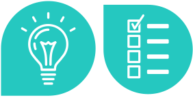
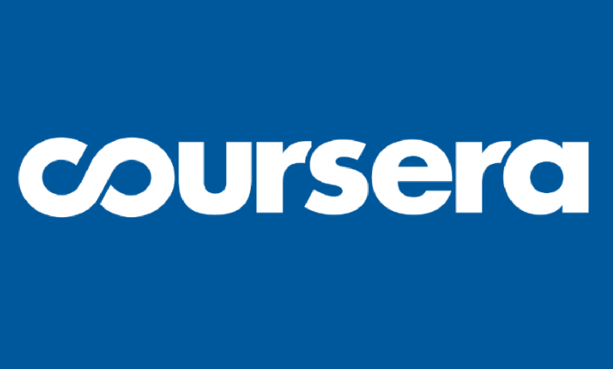
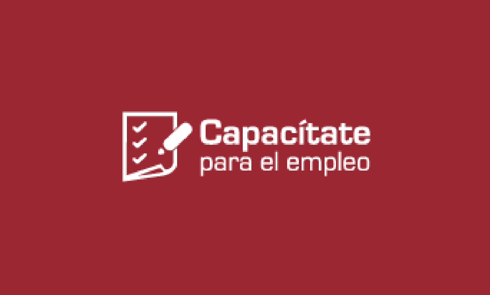
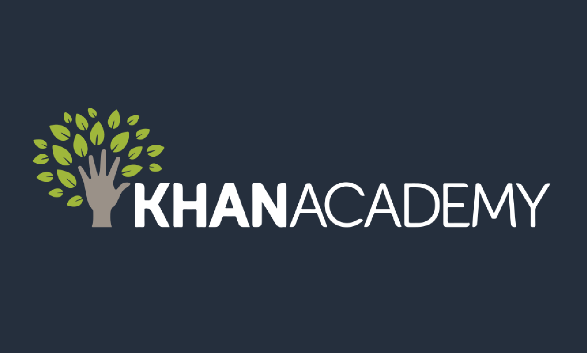
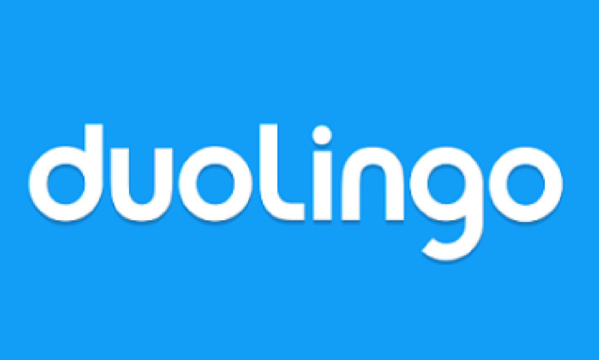

Esta universidad es una opción educativa de calidad, totalmente a distancia y gratuita. Ofrece servicios como becas y acceso a una enorme cantidad de recursos digitales, además de encontrarse disponible para la población mexicana en el extranjero.
Estudiar en Línea
La educación en línea es una de las grandes ventajas que ofrecen las tecnologías de información, principalmente el internet. Además de poder mejorar tu preparación desde cualquier lugar y contar con tutoría personalizada, realizar tus estudios a distancia te permite administrar tus propios horarios y ritmos de trabajo.
Tips
Estudiar en línea requiere la misma constancia y dedicación que una escuela presencial, sigue estos consejos para sacar el mayor provecho posible.
- Organízate y asigna el tiempo necesario para tus estudios.
- Aprovecha al máximo las nuevas tecnologías.
- Motívate, se constante y paciente.
- Amplía tus conocimientos con fuentes complementarias.
- Haz resúmenes para facilitar tus repasos generales.
- Pide asesoría cuando tengas dudas.
- Respeta las fechas establecidas en cada calendario.
- Acondiciona un lugar especial para estudiar.
Requisitos
Tener acceso a alguna computadora, tableta o teléfono inteligente con conexión a internet.
Los procesos de registro e inscripción suelen variar en cada institución educativa, pero algunos de los requerimientos mínimos suelen ser:
- Acta de nacimiento.
- Documento de identidad.
- Certificado escolar del nivel educativo anterior.
- Cuenta de correo electrónico.

Prepa y Bachillerato
Realizar estudios superiores en línea te permite crecer profesionalmente, además de combinar el estudio con tu vida personal y laboral. Aquí encontrarás algunas opciones de licenciaturas e ingenierías que puedes estudiar a distancia después de haber concluido el bachillerato.
A veces no es sencillo decidir qué carrera estudiar. Si este es tu caso, no olvides que puedes tomar un test vocacional que te ayude a identificar tus fortalezas y aptitudes.
Prepa en Línea Sep
Bachillerato Tecnológico Bivalente a Distancia (IPN)
B@UNAM
Bachillerato General por Áreas Interdisciplinarias (UDG)
Universidad Virtual del Estado de Guanajuato
Es un proyecto público, flexible y completamente gratuito que se imparte en todo México. Puedes acceder a su plataforma de estudio las 24 horas del día, lo cual te permite elegir el horario más adecuado para ti.
Nivel superior
Realizar estudios superiores en línea te permite crecer profesionalmente, además de combinar el estudio con tu vida personal y laboral. Aquí encontrarás algunas opciones de licenciaturas e ingenierías que puedes estudiar a distancia después de haber concluido el bachillerato.
A veces no es sencillo decidir qué carrera estudiar. Si este es tu caso, no olvides que puedes tomar un test vocacional que te ayude a identificar tus fortalezas y aptitudes.
Cursos
Además de las opciones que te hemos mostrado, cada vez existen más posibilidades de aprendizajeen línea fuera de la educación formal, además de diversas herramientas que te permiten ser autodidacta y construir tu propio conocimiento.
Te sugerimos las siguientes plataformas, donde encontrarás diversos tutoriales, cursos y talleres que puedes aprovechar.
México X

Este programa de la SEP reúne cursos abiertos en línea sobre una gran variedad de temas y respaldados por las mejores instituciones educativas de México. Para participar en ellos debes tomar en cuenta el calendario de cada uno.
Coursera

Aquí encontrarás cursos sobre toda clase de temas e impartidos por diversas instituciones educativas a nivel internacional. Pueden ser gratuitos o de bajo costo y varían en cuanto a la duración y fechas de inicio.
Capacítate para el empleo

Si lo que buscas es mejorar o adquirir ciertas habilidades relacionadas con tu empleo, esta plataforma es ideal para ti. Sus cursos son gratuitos y se encuentran disponibles de forma permanente.
Khanaacademy

Esta asociación ofrece cursos permanentes y gratuitos de distintas materias, los cuales te permiten definir tu propio ritmo de aprendizaje.
Duolingo

En esta plataforma podrás aprender idiomas como inglés, francés, alemán, italiano y portugués, eligiendo tu propio ritmo y horario.
Recuerda
Contar con una buena formación académica es una gran herramienta para ampliar tus posibilidades en el futuro. Con el uso de las tecnologías, solo es cuestión de organizarte para completar tus estudios de una forma sencilla y con la misma validez de un sistema presencial.
Esperamos que este tutorial te haya sido de utilidad. Te invitamos a visitar el portal de Mujer Migrante para conocer más acerca de este y otros temas.
¡Hasta pronto!